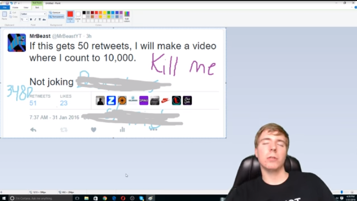
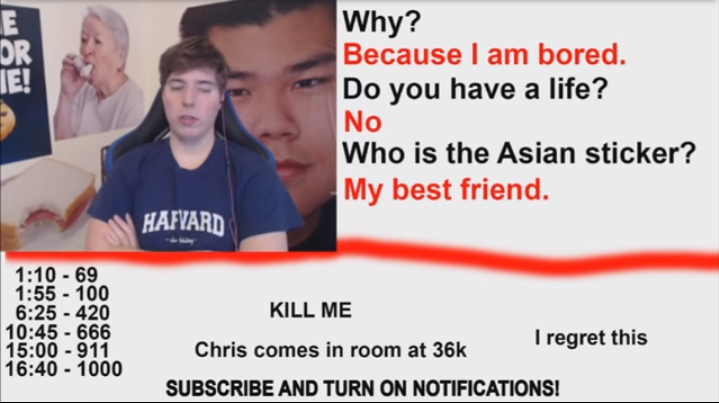

Jimmy Donaldson formerly known as MrBeast is an American YouTuber known for giving away money, crazy stunts and challenges. He made a channel called
MrBeast6000(now MrBeast) and started making videos since he was 13(early 2012). On 2017, Jimmy went viral due to a video called
Counting To 10000 In One Sitting which had a sequel called
I Counted To 100,000!.
Jimmy doing what he promised in the video "Counting To 10000 In One Sitting"
Jimmy about lose his mind in the video "I Counted To 100,000!"
After that, he became very popular and most of his videos started gaining millions and millions of views. After a while, Jimmy started including challenges and giving away money in his content.
He also started successful fundraisers with a former NASA and Apple engineer and YouTuber
Mark Rober, which includes
Team Trees. The goal of Team Trees is to raise $20 million which was surpassed and the fundraiser received over $24 million. In Team Trees they plant trees, $1 is equivalent to 1 tree. Which means they will plant over 24 million trees. As of today they have planted over 20 million trees.
They also started another successful fundraiser, this time it's called
Team Seas. In Team Seas the goal is to raise $30 million. This is similar to Team Trees. But the goal is to remove 30 million pounds of trash in the sea, $1 is equal to 1 pound. The fundraiser raised over the goal, and they have removed over 33 million pounds of trash as of today.
Fun Fact: Over million content creators promoted the Team Seas fundraiser.
Jimmy also made another YouTube channel featuring helping people, charity and giving away essentials, called
Beast Philanthropy. All of it's profit goes to making the world a better place.
Other than that, Jimmy won several creator awards. In 2019, he won the "Breakout Creator" award from the 9th Streamy Awards. In 2020, he won the "YouTuber of the Year" award from the 12th Annual Shorty Awards, he also won "Creator of the Year", "Live Special", "Social Good: Creator", "Social Good: Nonprofit or NGO" awards from the 10th Streamy Awards. In 2021, he won the "Creator of the Year" award from the 11th Streamy Awards. In 2022, he won the "Favorite Male Creator" award from the 2022 Kids' Choice Awards.
As of today MrBeast is the most subscribed YouTube channel owned by an individual, with a subscriber count over 113 million.
I love MrBeast, because of their content and personality. Jimmy's content is always entertaining yet still helpful and influences people in a good way. Jimmy always puts their heart to whatever they are making. He loves making people smile. He gives away money because it makes him happy. He is rich and poor at the same time. Every month he gets a revenue of $2 million from making content, but most of it goes to charity and content creation. Jimmy is a kind and selfless person. Jimmy has determination, patience and perseverance. He wanted to work as a content creator ever since he was 13. He failed many times, but he never gave up and never let himself down. It took him most of his teenage life, but he waited with action and got to his goal. Jimmy is an inspiration for a lot of people, including me.
We are similar in some ways
Made by CalmBubbles (Marc Philip Landicho) from Grade 9 Hydrogen for English 9 Learning Activty 8, Making Cultural Connections Project.